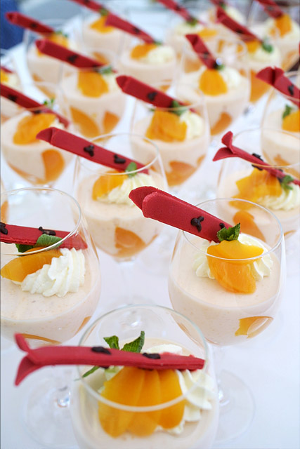

Doces · Musses
Musse espuma de pêssego

Ingredientes
- 1 lata de pêssegos em calda (reserve o xarope)
- 1 lata de creme de leite gelado sem soro
- 2 claras
- 1 colher (sopa) de açúcar
- 1 xícara (chá) de suspiros esfarelados grosseiramente
Modo de preparo
- Bata os pêssegos, 4 colheres do xarope e o creme de leite até homogenizar.
- Bata as claras em neve com o açúcar até suspiro e misture ao creme. Distribua em taças e gele 4 horas.
- Polvilhe os suspiros na hora de servir.